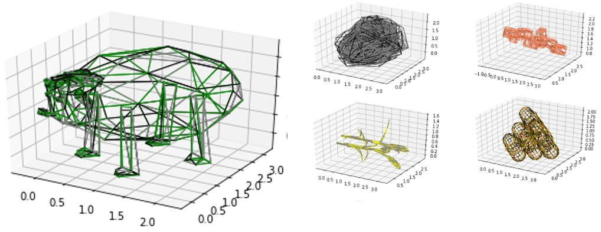
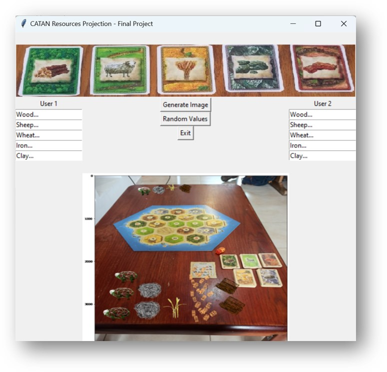

Final project by
Tamir Blumberg & Amitay Regev
This project starts with a passion for the famous board game Settlers of Catan, aka CATAN. This game already has a nice appearance and even 3d objects in it like small buildings and plastic mini-roads. In addition to that, our project tries to take the 5 resources (Lumber, Brick, etc) presented on paper resource cards in the game, and screen them on top of the player's table. Putting more life and realistic feeling to the game.an appearance
Main Steps:
Plotting the models after sampling gave us promising results:

And then the UI:

Do not touch. Here your project's video clip will be embedded by us...
The results show that the main goals of the project were fulfilled. The models keep the beauty and the information stored in them after the sampling process. Later on, after the projecting of the object, they still hold these details nicely.
The user interface shows POC that we can already use to improve our game experience. And for new users and other tables, the existing code with 20 new photos of their table will be enough to recreate their pleased.